/* nadia-lee-cohen - proofs */
12 plates. Deterministic overlays rendered by the composition-analysis skill.
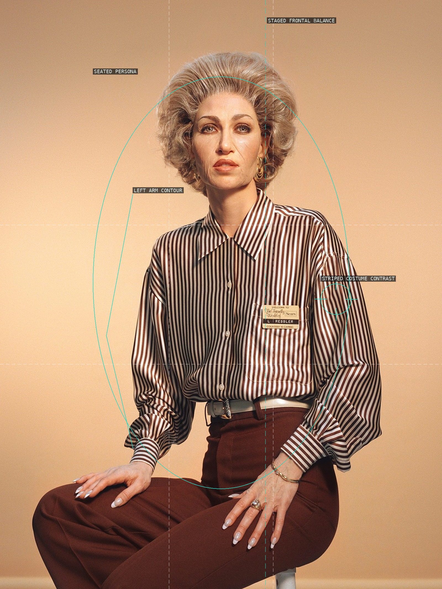
01-lilian-ressler — Frontal persona in an open studio field.
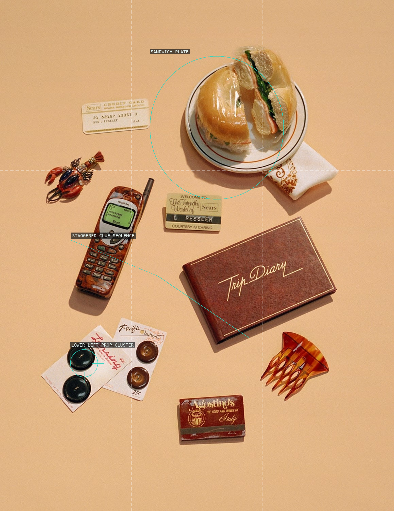
02-lilian-ressler-still-life — Separated props become clues.
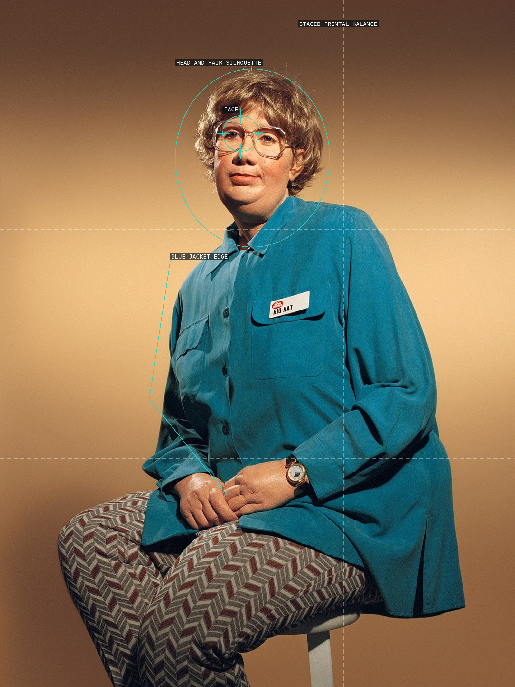
03-kat — A severe costume silhouette.
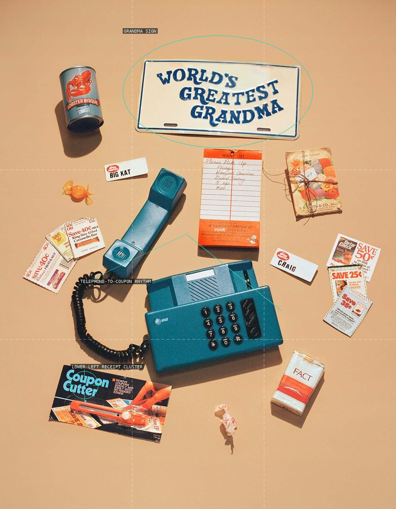
04-kat-still-life — Floating commercial fragments.
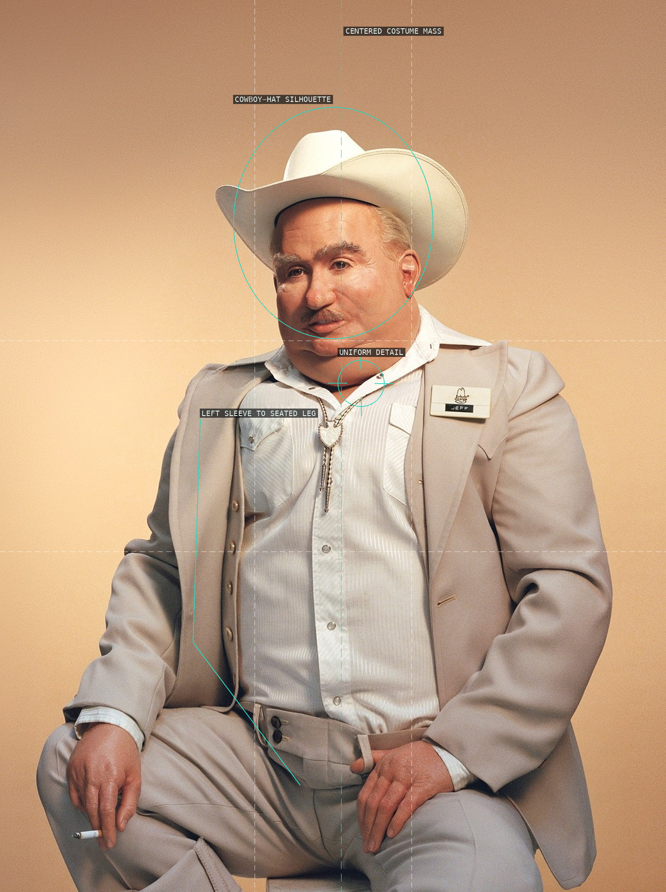
05-jeff — Costume mass and near-symmetry.
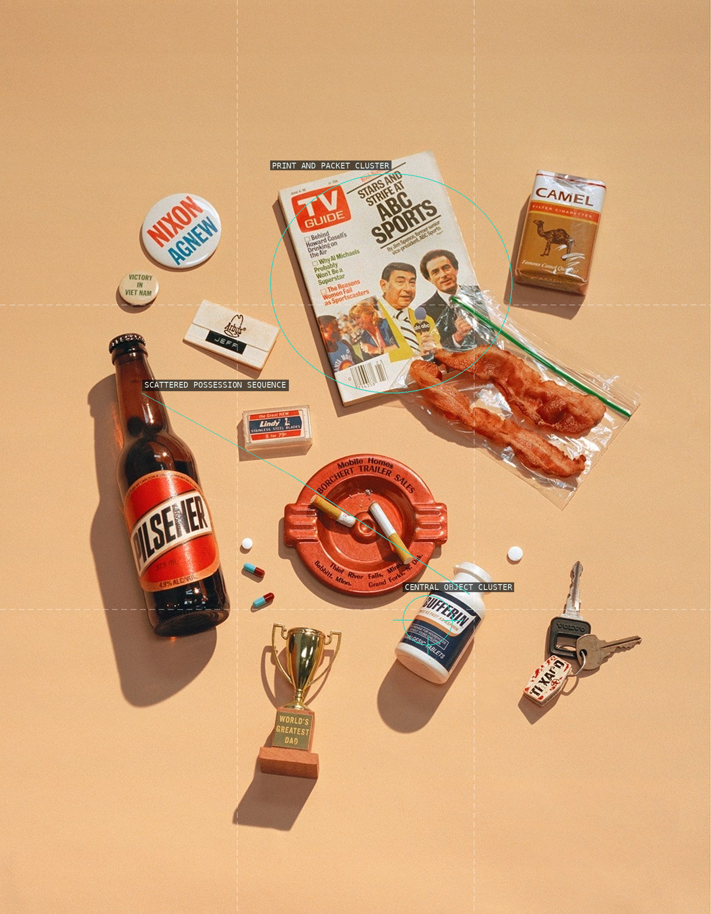
06-jeff-still-life — A scattered possession sequence.
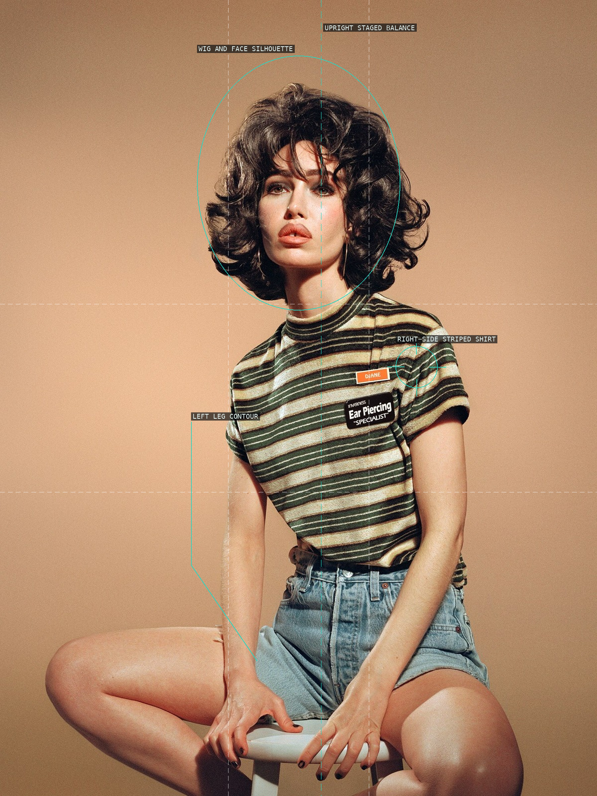
07-diane — Wig, stripes, and a fixed pose.
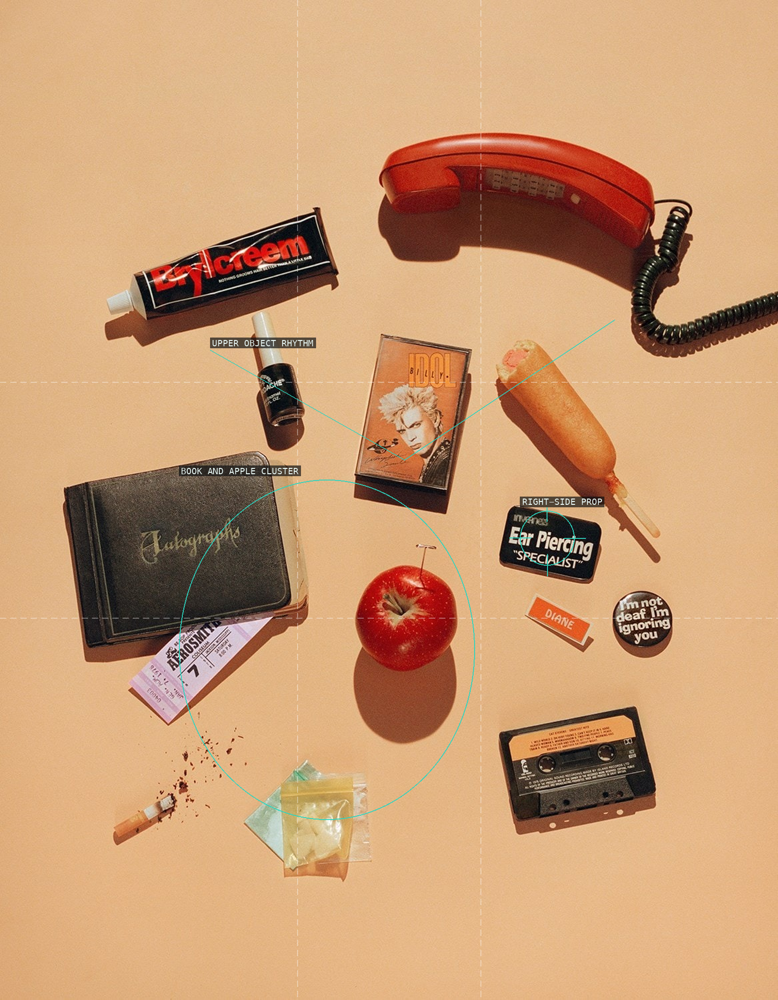
08-diane-still-life — Small color accents in open space.
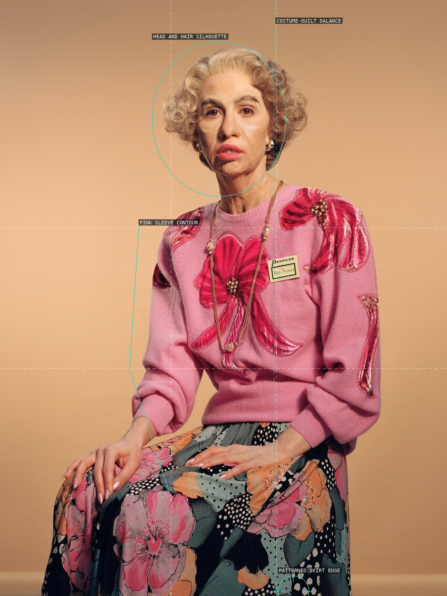
09-mrs-fischer — A designed outer silhouette.
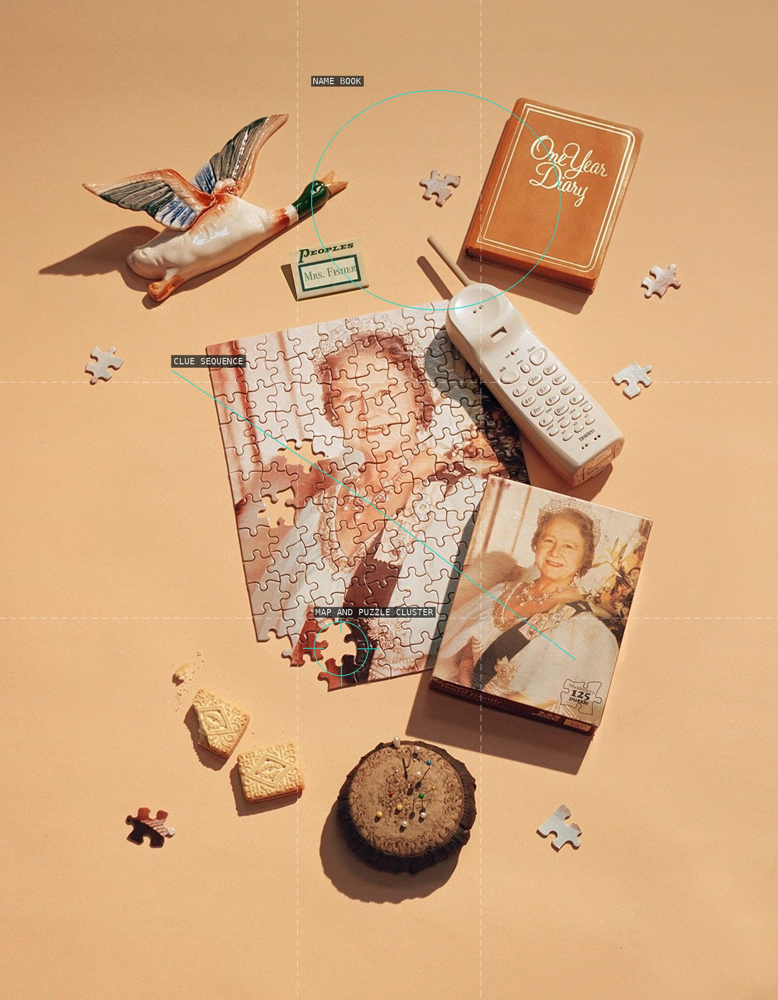
10-mrs-fischer-still-life — Props distributed as biography.
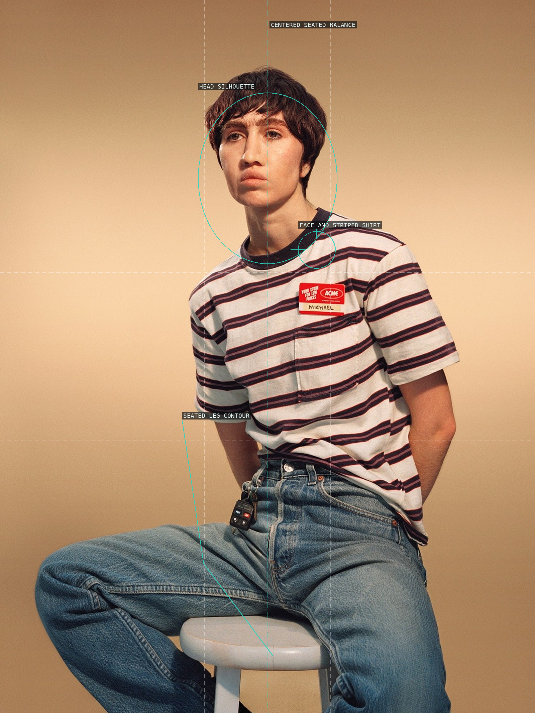
11-michael — Centered seated performance.
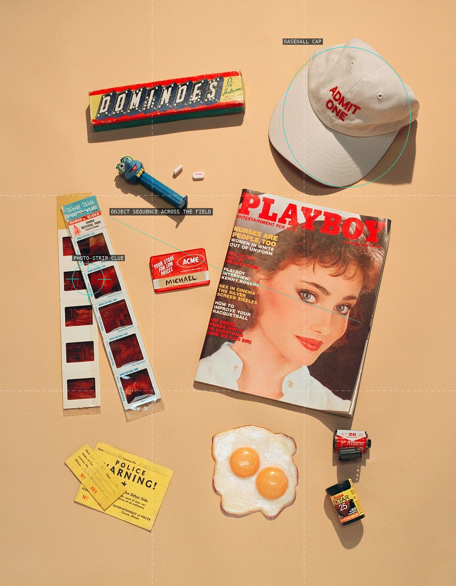
12-michael-still-life — An oblique portrait through things.